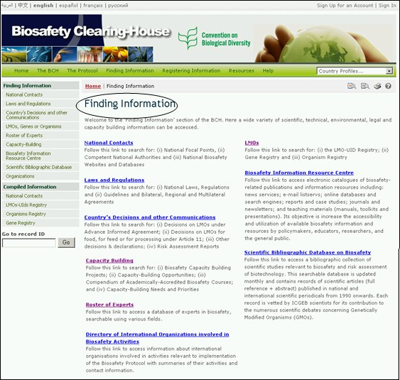

URL: http://bch.cbd.int/database/
议定书第20条下成立了生物安全信息交换所，用于开展有关改性活生物体的信息交流。第20条还列出了对于信息类型的要求，并规定由生物安全信息交换所维护有关信息数据库。获取这些信息需进入生物安全信息交换所网址中的 查询信息 页面，该页面可通过生物安全信息交换所主页欢迎来到生物安全信息交换所中央门户网站导航工具上的链接进入。

图 1

图 2
可通过查询信息页面左侧菜单中的链接或文字中的链接获得不同类型的信息。本模块将详细讲解每一种信息类型，并指导如何从各数据库获取具体信息。